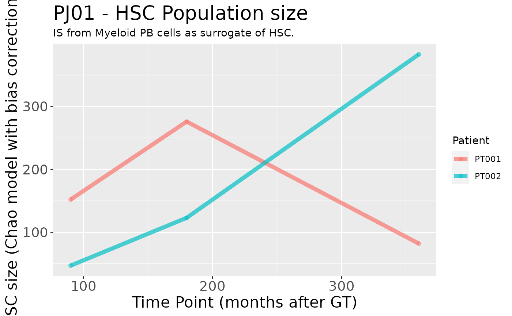

Plot of the estimated HSC population size for each patient.
Source:R/plotting-functions.R
HSC_population_plot.RdPlot of the estimated HSC population size for each patient.
Usage
HSC_population_plot(
estimates,
project_name,
timepoints = "Consecutive",
models = "Mth Chao (LB)"
)Arguments
- estimates
The estimates data frame, obtained via
HSC_population_size_estimate- project_name
The project name, will be included in the plot title
- timepoints
Which time points to plot? One between "All", "Stable" and "Consecutive"
- models
Name of the models to plot (as they appear in the column of the estimates)
See also
Other Plotting functions:
CIS_volcano_plot(),
circos_genomic_density(),
fisher_scatterplot(),
integration_alluvial_plot(),
sharing_heatmap(),
sharing_venn(),
top_abund_tableGrob(),
top_cis_overtime_heatmap()
Examples
data("integration_matrices", package = "ISAnalytics")
data("association_file", package = "ISAnalytics")
aggreg <- aggregate_values_by_key(
x = integration_matrices,
association_file = association_file,
value_cols = c("seqCount", "fragmentEstimate")
)
aggreg_meta <- aggregate_metadata(
association_file = association_file
)
estimate <- HSC_population_size_estimate(
x = aggreg,
metadata = aggreg_meta,
stable_timepoints = c(90, 180, 360),
cell_type = "Other"
)
#> Calculating number of IS for each group...
p <- HSC_population_plot(estimate$est, "PJ01")
p
